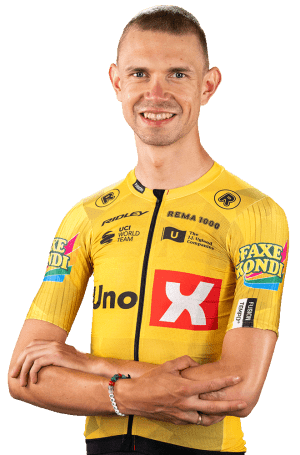

Andreas Kron
Datos personales
- Nombre completo: Andreas Lorentz Kron
- Fecha de nacimiento: 1/06/1998
- Pais de nacimiento: Dinamarca
- Equipo: Uno-X Mobility
- Dorsal: 135

Datos equipos
- Uno-X Mobility
- Lotto Dstny
- Lotto Soudal
- Riwal Readynez Cycling Team
- Riwal CeramicSpeed Cycling Team
- Riwal Platform Cycling Team
- Team Pythonpro.com-VeloWear
- DCR Ballerup Junior
Temporada 2025
| Nombre del Dato | Resultado |
|---|---|
| Etapas participadas | 8 |
| Victorias Totales | 9 |
| Podiums Totales | 19 |
| Kilometros recorridos | 3000 |
| Sprints ganados | 15 |
| Años Compitiendo | 10 |
Multimedia
Equipo Uno-X Mobility en la Vuelta Ciclista a España 2026